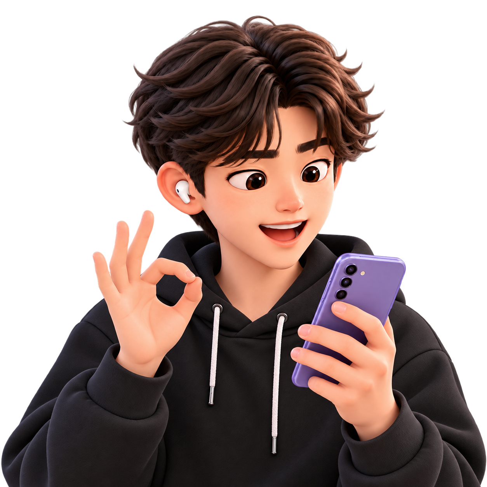

USER SCENARIO 1
어디에 뭘 적어놨더라?
회의에서 정한 순서부터 뒤늦게 받은 안내까지, 같은 업무에 관한 기록을 연결합니다.
재웅 선배
프로님, 어제 정한 A사 시연 순서랑
오늘 집합 시간 좀 알려줄래요?
오늘 집합 시간 좀 알려줄래요?
노트였나… 메일이었나…

어제 A사 시연 준비
쓱!
A사 시연 준비
회의에서 정한 순서
이후 정리한 수정사항
뒤늦게 받은 집합 안내
삼성노트
A사 시연 준비회의
시연 순서 설치 → 연결 → 사용 예시
전체 시연 5분
메일
A사 시연 자료 — 내일 수정할 것
7쪽 연결 화면 교체 · 9쪽 설명 축약
나와의 채팅
A사 시연, 내일 8:40 1층 로비.
충전 어댑터 챙기기.
충전 어댑터 챙기기.

설치 → 연결 → 사용 예시 순서로
5분이고, 집합은 8시 40분이에요!
5분이고, 집합은 8시 40분이에요!